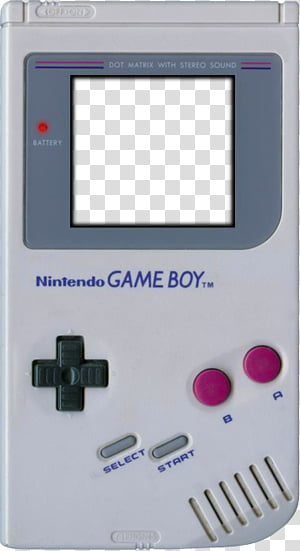
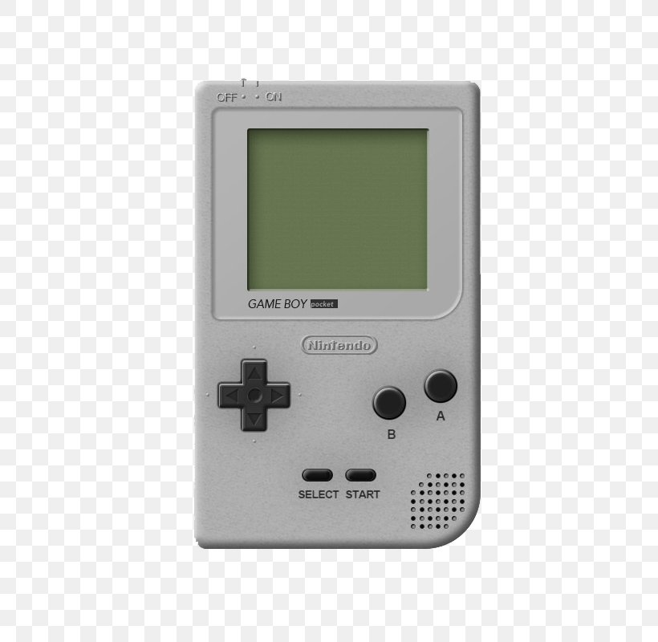
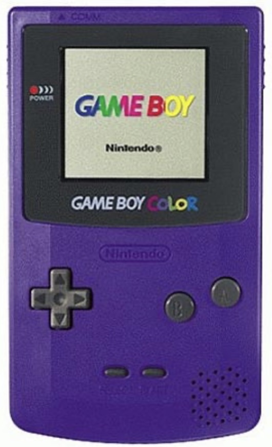
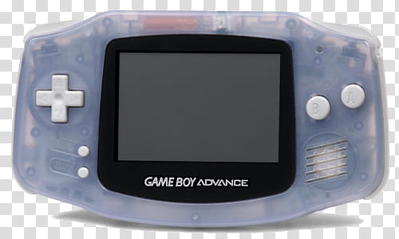
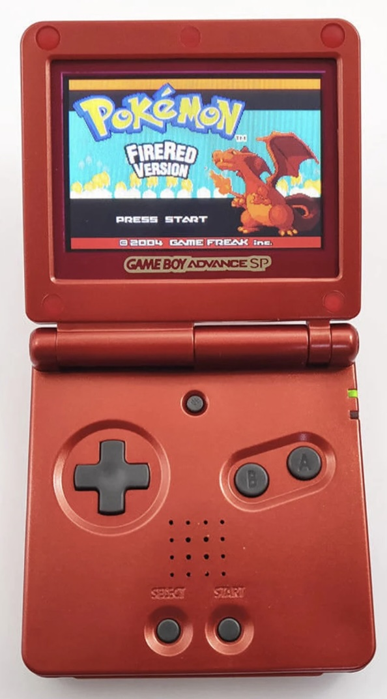
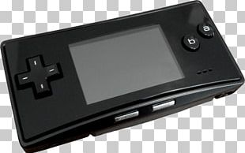

A Quick Spiel
Invented by Gunpei Yokoi the Game Boy was released in Japan by Nintendo in April of 1989. The new gaming system was only capable of displaying four colors at a time and relied on four double A batteries to play, but it fit in your hand! The Game Boy would launch in America with Tetris just three months later, and go on to become one of the best selling gaming systems of all time. In 1996 the Game Boy would see its first upgrade with the release of the Game Boy Pocket, a much smaller version of its predecessor, then just two years later, the Game Boy Color. The Game Boy Color was capable of displaying fifty-six colors, opening up a new world of possibilities for game developers. Next, we're in 2001 now, came the Game Boy Advance which showed off a horizontal design and was better in every measurable way. Nintendo would go on to release the Game Boy Advance SP in 2003, notable for its clamshell design and implementation of a backlit screen, and the Game Boy Micro, a tiny version of the Game Boy Advance. My favorite part is that throughout all these designs Nintendo made sure users would be able to take their games with them, so when my aunt gave me her Super Mario Land from 1989 I could play it on my Game Boy Advance in 2005, and boy did I.

Classic Game Boy released in 1989

Game Boy Pocket released in 1996

Game Boy Color released in 1998

Game Boy Advance released in 2001

Game Boy Advance SP released in 2003

Game Boy Advance Micro released 2005